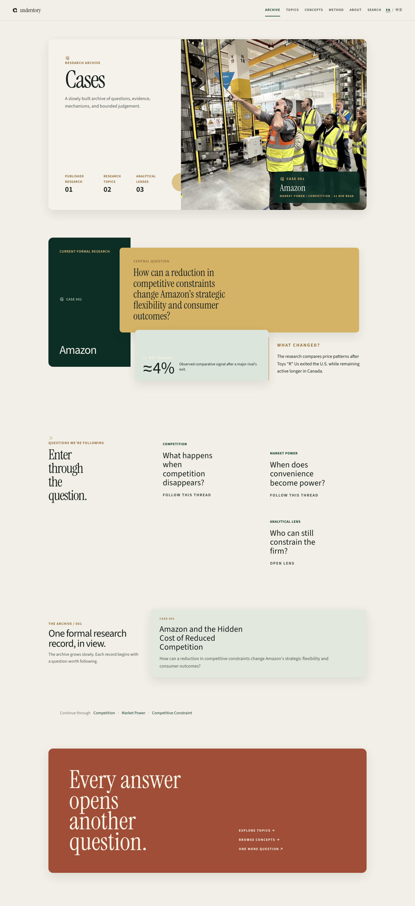
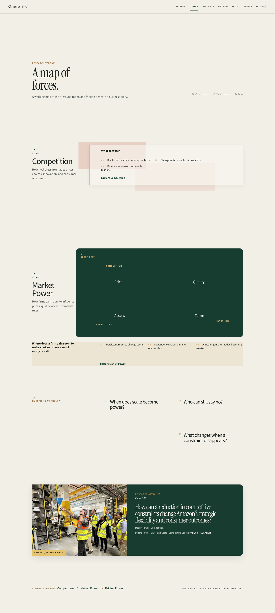
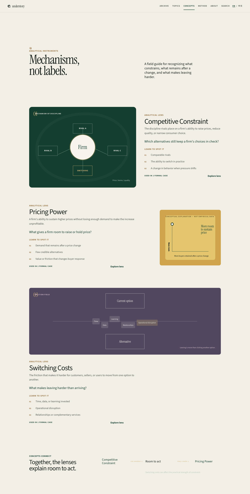


<!doctype html><meta charset="utf-8"><title>Round 6.1 overview</title><style>html,body{margin:0;background:#ece8de;color:#163d34;font:14px system-ui}header{padding:20px 4vw 12px;display:flex;justify-content:space-between}h1{margin:0;font:600 24px Georgia,serif}main{display:grid;grid-template-columns:1fr 1fr;gap:18px;padding:0 4vw 4vw}figure{margin:0;padding:12px;background:#f8f6ef;box-shadow:0 8px 22px #162c2416}figcaption{margin-bottom:9px;font-size:11px;letter-spacing:.12em;text-transform:uppercase}img{display:block;width:100%;height:560px;object-fit:contain;object-position:top;background:#f8f6ef}</style><header><h1>Round 6.1 · composition overview</h1><span>full-page silhouettes</span></header><main><figure><figcaption>Cases · dossier / snapshot</figcaption></figure><figure><figcaption>Topics · pressure / room</figcaption></figure><figure><figcaption>Concepts · instruments</figcaption></figure><figure><figcaption>Amazon · visual wave</figcaption></figure></main>
